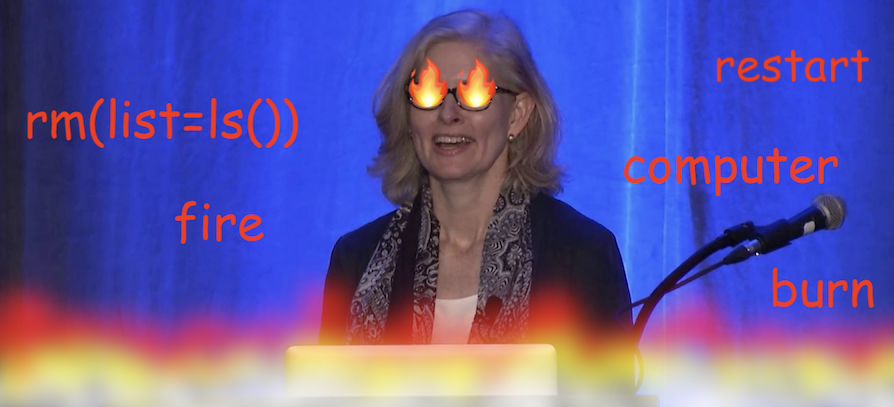
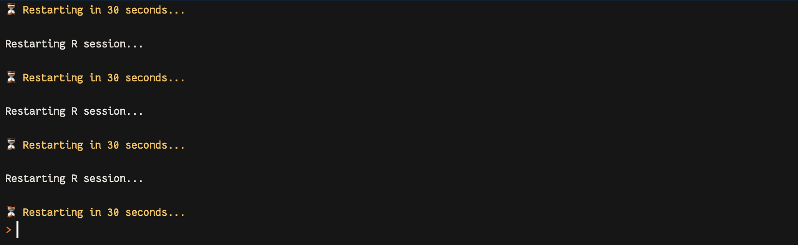

setHook(
"rstudio.sessionInit",
function(...) {
message("⏳ You have 30 seconds...")
Sys.sleep(30)
rstudioapi::executeCommand("restartR")
}
)
tl;dr
Make RStudio restart itself. Perpetually.
Passing the torch
If the first line of your R script is
rm(list = ls())I will come into your office and SET YOUR COMPUTER ON FIRE 🔥.
The objects in your R environment are wicked little imps whose only motivation is to deceive you. They must be destroyed. Frequently.
But rm(list = ls()) isn’t enough to start a new session with a completely a clean slate. It doesn’t detach packages, for example. Reproducibility is at stake here, folks!
The only salvation is to completely restart R. All the time.
I don’t think you heard me. Come closer. I said all the time.
An extinguisher
I’ve been woke to this thought technology for a while. You’re right, it’s time I gave back to the community.
I can’t trust you to restart R voluntarily, so I must help you to help yourself.
So, I have for you a gift. A precious snippet of R code that came to me in a fever dream.
Simply open your .Rprofile1 (a special file that’s executed at start up) with usethis::edit_r_profile()2, paste in the code3 and then restart R for it to take effect4.
What does it do? It waits 30 seconds after RStudio starts up5 and then restarts R6.
…Which prompts another restart after 30 more seconds.
…And another.
…Forever7.

I know what you’re thinking: doesn’t this block the console? Kind of. You can still type stuff and it’ll be executed before the next restart. Only to disappear immediately.
Complete panic. Just like Jenny wanted! I think?
Rise from the ashes
How can you thank me for this? I am humble (extremely), but you’re welcome to support my Patreon.
Happy March 32nd, colleagues.
Environment
Session info
Last rendered: 2024-03-31 22:29:35 BSTR version 4.3.1 (2023-06-16)
Platform: aarch64-apple-darwin20 (64-bit)
Running under: macOS Ventura 13.2.1
Matrix products: default
BLAS: /Library/Frameworks/R.framework/Versions/4.3-arm64/Resources/lib/libRblas.0.dylib
LAPACK: /Library/Frameworks/R.framework/Versions/4.3-arm64/Resources/lib/libRlapack.dylib; LAPACK version 3.11.0
locale:
[1] en_US.UTF-8/en_US.UTF-8/en_US.UTF-8/C/en_US.UTF-8/en_US.UTF-8
time zone: Europe/London
tzcode source: internal
attached base packages:
[1] stats graphics grDevices utils datasets methods base
loaded via a namespace (and not attached):
[1] htmlwidgets_1.6.2 compiler_4.3.1 fastmap_1.1.1 cli_3.6.2
[5] tools_4.3.1 htmltools_0.5.8 rstudioapi_0.16.0 yaml_2.3.8
[9] rmarkdown_2.26 knitr_1.45 jsonlite_1.8.8 xfun_0.43
[13] digest_0.6.35 rlang_1.1.3 evaluate_0.23 Footnotes
Don’t.↩︎
Don’t.↩︎
Don’t.↩︎
If you’re feeling extra spicy, maybe randomise the wait period!↩︎
I also tried
rsudioapi::restartSession()and.rs.restartR()here, but they didn’t work quite as I expected. Let me know any non-RStudio ways to do this, of course.↩︎Maybe you’ll have to force quit RStudio? Use Cmd+Option+Esc on a Macintosh or Ctrl+Alt+Delete on Michaelsoft Binbows. I assume Linux users know what they’re doing.↩︎
Reuse
CC BY-NC-SA 4.0